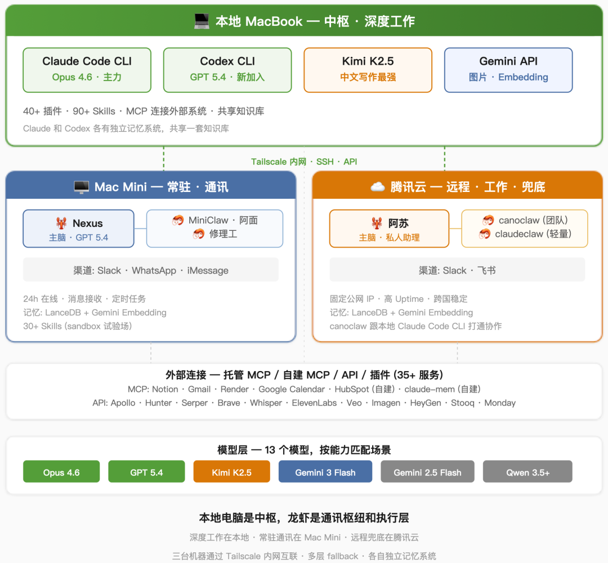
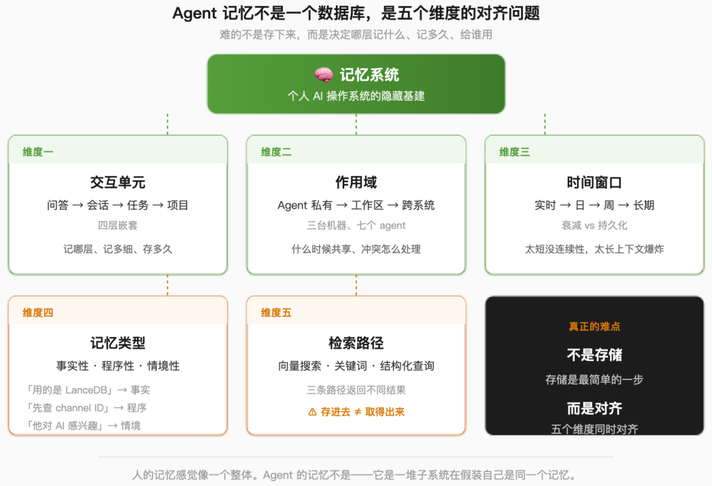
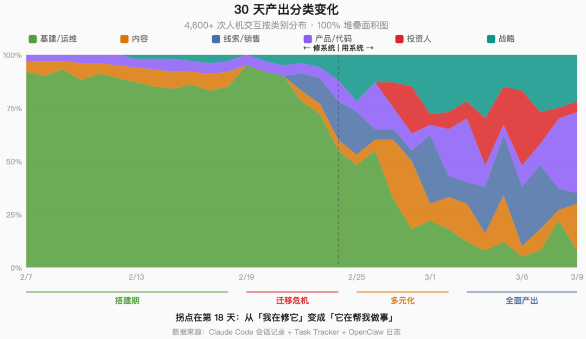

过去 30 天，我把自己的 CEO 工作流搬上了一套自己搭的 AI 系统。
不是「我用 ChatGPT 写邮件」那种。是一个真正在跑的系统——三台机器，七个 agent，十三个语言模型，接了 CRM、代码库、通讯工具和开放网络。它帮我写内容、打分线索、审代码、准备投资人会议，半夜出了事还会把我叫醒。
这篇是系列的 Part 1，只讲骨架和踩坑。后面深入展开——具体写什么，文末你来投票。
一、系统全貌
先把家底摊开。

系统拓扑：三台机器、七个 agent、十三个模型
系统跑在三台机器上。不是提前规划好的，是被现实逼出来的——一台搞不定，每种方案都坏了，一个一个加上去才稳住。
本地笔记本是中枢。 深度工作都在这台上发生。主力是 Claude Code CLI（Opus 4.6 包月套餐），GPT 5.4 出来之后开始用 Codex CLI 跑，Kimi K2.5 负责中文写作，Gemini API 负责图片生成和 embedding。四个模型各司其职，互不替代。
Mac Mini 放在家里，是通讯枢纽。 上面跑着 OC——一只Agent带三只Subagent。主脑叫 Nexus，最近从 Gemini 3 Flash 换到了 GPT 5.4，负责日常对话和任务协调。三只子 agent 各有分工。24 小时在线，对接 Slack、WhatsApp 和 iMessage。我睡着的时候，它应该还在接消息、跑定时任务、维持状态。
腾讯云是远程兜底。 也是一只主agent带两只子agent。主脑叫阿苏，是我的 CEO 私人工作区；CanoClaw 是 Canopy 的团队龙虾、同时跟本地的 Claude Code CLI 打通协作；ClaudeClaw 专门跑廉价的轻量定时任务。对接 Slack 和飞书。固定公网 IP，稳定 uptime，跑大任务不跟本地抢资源。
本地电脑是中枢，OC是通讯枢纽和执行层——真的是「claw」了，帮我对接各个方向的信息流。三台机器通过 Tailscale 内网互联。
模型不是一个，是十三个。本地笔记本上跑了四个，两台龙虾各自有主脑模型和廉价模型，加起来覆盖了推理、执行、中文写作、图片生成、embedding 五类能力。选模型是一门功夫——如果不实际去用，你真的不知道每个模型的特性。看评分榜都差不多，真上手了差异巨大。哪个模型做什么，不是品牌忠诚的问题，是能力匹配的问题——Opus 推理全面、落地交付也全面，是最稳的全能选手；GPT 5.4 洞察力比 Opus 还强，但落地能力很差，做图、做长文都不行，局部代码能力倒是强；Kimi 中文地道，就这一件事，但这一件事别人都做不好；Gemini 主要是 Flash 性价比高，有段时间是我的中坚力量；Qwen 在中文多模态上有优势，声音合成之类的场景用它。你不亲手试，光看评分榜选不出来。
模型是大脑，agent 还需要手脚。外部连接是手脚的第一层：我接了三十多个外部服务，有的走托管 MCP（Notion、Gmail、Render、Google Calendar），有的自建 MCP 跑在腾讯云上（HubSpot），有的走传统 API（Apollo、Hunter、Serper、Brave、Whisper、ElevenLabs、Veo 视频生成、Imagen 图片生成、HeyGen），还有的走 OpenClaw 的插件机制（Slack、WhatsApp、飞书、iMessage）。现在的 infra 对 agent 并不友好——你能接上，但每一个都有自己的认证方式、数据格式和踩不完的坑。MCP 协议在尝试标准化这件事，但远没到「插 USB 就能用」的程度。
手脚的第二层是 skills 和插件——告诉 agent「遇到这类任务，按这个方法来」。光 Claude Code 本地就装了四十多个插件、九十多个 skill，从金融分析、投行建模、PE 尽调，到前端设计、代码审查、自动化调试，再到我自己写的八个业务 skill（投资人材料、客户研究、线索打分、中文文案）。腾讯云龙虾装了十几个，Mac Mini 的 sandbox 里堆了三十多个——Whisper 转写、Apple Reminders、Bear 笔记、Spotify，什么都往上试。Codex 上几乎空白，它的 skill 生态还很早期。没有 skills 的 agent 像一个什么都会但什么都不主动干的实习生。
以上都是看得见的部分。还有一层看不见的基建：记忆。本地的 Claude 和 Codex 我都各自搭了记忆系统，并且让它们共享一套知识库。为了让 agent 能高效读取信息，我专门花了一个多小时重新组织了本地的文件夹结构——把散落的文件按项目归类、统一命名、写清楚每个目录是干什么的。这种工作不性感，但 agent 能不能快速找到正确的上下文，就取决于这些细节。
到这里你可能觉得：挺整齐的嘛。
但这个「整齐」是三十天踩坑踩出来的。
二、基建比我想象的难十倍
Claude Code CLI 是我入坑的第一站。第一次看到它向我索取 permission、要动我本地的 bash 终端的时候，我是异常兴奋的。我已经很多年没有编程了，突然发现在 agent 的加成下，我不但可以回来搞，而且比以前更牛了。它花了十分钟帮我部署好龙虾（OpenClaw），非常顺利。
然后就没有然后了。后面全是坑。
避坑 0：龙虾自杀首秀
第二周，我在外面旅行。Mac Mini 在家里跑着后台任务，理论上不需要我管。
然后它把自己修坏了。一次自动更新触发了系统级别的变化，agent 运行时跟着挂了，后台通讯通道一起断了。依赖这台机器的 agent 全部失联。
我碰不到机器。找人帮忙也联系不上。干等了一天。
第二天我做了一个决定：不等了，直接开腾讯云。先开了香港区，发现有些模型在那个区不可用。又切到新加坡区。重新搭环境、配认证、验证通道。这次终于跑通了。
那之后我加了三层通讯冗余：OpenClaw 在两台独立主机各部署一份；做了一个运维状态页，一眼看到谁在线谁挂了；用 Tailscale 组了内网，不管什么东西坏了，我都能从任何地方远程连上去。
AI 系统的故障方式跟传统服务不一样。一个连不上模型的 agent 不会干净地崩溃。它会静默地失败——不回应、回应错误的信息、用过时的上下文回应。这种静默失败比崩溃更危险，因为你可能过了很久才发现。
AI 系统真正需要的不是更聪明的 agent，而是传统运维意义上的冗余和可恢复性。
大坑 1：记忆系统
记忆系统到现在也不能说完全满意，但能用。这可能就是现阶段诚实的上限。
表面问题听起来简单：agent 会忘事。真正的问题不是忘，而是怎么让记忆系统在工程上跑起来。上下文只是第一步，跨过上下文，AI 记忆课题才正式开始。也让我体会到人类记忆系统的美妙。
大部分人对 agent 记忆的理解停留在「存个向量数据库」。实际上你至少要想清楚五个维度：
第一，交互单元。 一轮问答（turn）是最小的单位。多轮问答组成一次会话（session）。一次会话可能只完成了一个任务的一部分。多个任务属于一个项目。你的记忆系统要在这四层里决定：记哪层、记多细、存多久。
第二，作用域。 这条记忆是给谁用的？Claude Code 的项目记忆，对腾讯云上处理 Slack 消息的龙虾毫无意义。反过来，龙虾在 WhatsApp 上跟人聊天积累的上下文，Claude Code 也不需要知道。三台机器、七个 agent，每个都有自己的视角。什么时候知道共享，有冲突的时候怎么处理。这又是问题。
第三，时间窗口。 昨天的 session 摘要下周可能就是噪音。上个月的决策记录可能永远有用。哪些记忆该衰减、哪些该持久化，没有通用答案。
第四，类型。 「我们用的是 LanceDB」是事实性记忆。「遇到 Slack 双会话问题先检查 channel ID」是程序性记忆。「上次跟投资人聊天他对 AI 很感兴趣」是情境性记忆。三种记忆的存储格式、检索方式、更新频率完全不同。
第五，检索路径。 向量搜索、关键词匹配、结构化查询——三条路径返回的结果不一样，适用的场景也不一样。你的记忆存进去了，不代表在需要的时候能被正确地取出来。又是一个问题。

Agent 记忆不是一个数据库，而是五个维度的对齐问题
人的记忆感觉像一个整体。Agent 的记忆不是——它是一堆不完全一致的子系统在假装自己是同一个记忆。记忆的难点不是存下来，而是在五个维度上同时对齐。
更隐蔽的坑是静默腐化。有大约两周时间，我的自动记忆写入管道在存储前把对话摘要截断到了 500 个 token。截断后的摘要被正常地做了向量化、正常地存进了数据库、搜索时返回正常的相似度分数。管道的每一个环节都没报错。垃圾数据完美地保持了结构，穿过了整条流水线。
49 条记录。两周。没有任何告警。直到我偶然手动检查了一条查询结果才发现。
我和几位在硅谷做研究的同学沟通，得知Agent记忆系统是学术界和研究界下一个很火的话题。我很高兴能摸到这一层，一下子把我带到AI研究的最前沿领域。
大坑 2：外部连接烧掉一亿 token
Slack 有一个非常诡异的现象：你在手机端和桌面端给同一个人发 DM，对你来说是同一段对话。对 agent 来说，可能是两个独立的会话。所以龙虾会按两个上下文跟你聊天——你觉得它前言不搭后语，其实它活在两个平行世界里。
反过来的问题是上下文滚雪球。在一个会话里，龙虾不知道你「聊完了没有」。它会一直挂着前面的对话。你如果不手动 /new 启动新会话，你跟它聊了一大堆东西之后再说一句「你好」，这个「你好」可能带着 20-40 万个 token 的上下文一起送进了模型。你还奇怪为什么它反应变慢、回答变差——其实是上下文胀破了。
现在的通讯基础设施是给人设计的，不是给 agent 设计的。人知道一段对话什么时候结束了。Agent 不知道。
大坑 3：Proactive Agent 变吞金兽
龙虾的出现让我对主动 agent 有很高的期望。
某天早上起来，我发现前一晚上 agent 烧了 50 多美元的 token。查了很多文件，什么产出都没有？？它在后台跑了一整夜——任务失败，retry，又失败，又 retry，循环往复。没有告警，没有熔断，没有「你确定要继续吗？」它就那么安安静静地烧着。现在每天早上看账单都有点提心吊胆。
Agent 最吸引人的地方是主动性。最危险的地方也是主动性。两种典型的坑：一是自动任务频率太高，每个看起来不大，但后台一直在调 LLM，你不仔细看的话累计 token 很惊人。二是任务失败后的 retry 风暴，成本翻倍但产出为零。
后来我做了一个设计决策：交互式工作全走 Claude 和 Codex 的包月订阅，后台自动任务走 API 但设严格的 token 上限。凌晨两点 agent 在无人看管地跑的时候，上限是一个功能，不是一个限制。
三、我花了多少钱和多少时间
这篇如果不讲具体成本，就不算真干过。
固定订阅 — Claude Max $200/月，是最大的一笔，也是最值的一笔。30 天里光 Claude Code 就吞了 35 亿个 token——如果按 API 计费，账单大概在一万美元左右。包月封顶，不管跑多少都是 $200。ChatGPT Plus $20/月（给 Codex CLI 用，6,000 万 token）。Apollo Basic $49/月（线索数据库）。三项加起来 $269/月，这是固定成本。
API 调用 — Gemini 是个意外。我以为龙虾走 Flash 模型很便宜，结果这个月 Gemini 账单超过 $400。事后扒了一遍才搞清楚：二月份两台龙虾的主力模型都是 Gemini，所有消息和定时任务都走它，这是最大的一笔。其次是记忆系统的后台 pipeline——有个任务检测脚本每 10 分钟调一次 Gemini 做判断，记忆同步每小时跑一次，这些我设完就忘了，但它们一直在烧。再加上 Veo 视频生成、PDF 解析、embedding，零零散散又是一笔。$400 里有一半是我自己没注意到的后台任务在默默消耗。Kimi K2.5 按量付费，主要用在文章翻译和中文写作，几十块人民币。其他 API（Serper 搜索、Brave 搜索、Hunter 邮箱验证）大部分在免费额度内。
服务器 — 腾讯云轻量应用服务器，一年几百块人民币。Mac Mini 是一次性采购，不算在月费里。
合计 — 第一个月花了 $700 左右。Claude Max $200 是最值的一笔（35 亿 token 的包月），Gemini $400 多是最意外的一笔。前面讲过的那个设计选择——交互式走包月、自动任务走 API 设上限——控住了 Claude 的成本，但 Gemini 那边我犯了一个典型错误：设了很多后台自动化任务，每个看起来都不贵，然后就忘了。等账单来了才发现它们加起来比我的主力工具还贵。后来我把后台任务的频率砍了一半、关掉了几个没产出的 pipeline，正常月费回到 $400 左右。五年前做同样的事需要雇一个全职技术人员或者买一套企业软件。
时间 — 前两周，50% 到 70% 的工作时间花在了基建和修理上。不是在写 prompt，不是在探索 agent 的有趣行为。是在让系统先不要炸。第三周开始回本，到第四周能看到复利——agent 有了上下文积累，pipeline 在跑，记忆层有了数据，每个新任务的起点都比前一周高。但你得先撑过前两周。
注意力 — 这是最隐性的成本。一个需要你一直盯着的 AI 操作系统不是操作系统，是个工具。前两周真正的工作，是让系统值得信赖到可以丢在后台跑、不需要我审核每一条输出。这种信任是通过故障和修复一个一个挣出来的。
我花的第一笔大钱不在 intelligence 上，而在避免 intelligence 把系统搞坏上。
四、现在它在干什么
30 天，4,600 多次人机交互。不讲「一天的样子」了——按类别拆开来看更能说明问题。

30 天产出分类变化：从基建一色到六类并行
基建/运维 — 36%。 前两周占掉了 90%。模型迁移（Qwen → Gemini → Codex → 额度烧完又切回 Gemini），Slack streaming 三种模式每种踩一遍，记忆系统从零搭起来又推翻重来，16 个 cron 定时任务一个一个调通。第三周开始衰减，到第四周末降到 10% 左右——但不会归零。每天 33,000 行日志、363 次 socket 自动重连，运维是一个常数。
内容 — 21%。 你正在看的这篇就是产出之一。英文稿用 Claude Code 写，中文稿用 Kimi K2.5 翻，图表用 Gemini API 生成，视频用 CosyVoice 克隆声音加 HeyGen 做数字人。从第三周开始成为主要产出。
线索/销售 — 11%。 第三周才出现。为公司搭建了一个Lead Gen - Qualification - Outreach的系统，现在大概70分左右在运行。针对我们行业做了筛选和打分的优化，跨 Apollo、Hunter、Brave 三个数据源交叉比对，产出近两千家公司、一千七百多个决策人联系方式。邮箱验证走三层架构——语法检查、MX 记录、SMTP 握手——8,221 封联系人邮件过完筛选，清掉 13% 的 bounce。Revival dashboard 从第三方工具迁到自建后台，BDR 团队直接拿来做外联。
产品/代码 — 9%。 我通过几个agent协作，更加深入的理解了我们产品各个层面代码和客户使用的关系，龙虾读 Notion, Slack，Claude 读代码分析，把客户提出来的 issues 匹配到大概的代码块，做技术和业务层面的分析。这套流程如果跑通，一个客户问题从"收到"到"定位到代码"能从两天缩到半小时。另外我也完成了人生的首个 vibe code 产品——公司新的 demo 页面（后面会给大家试试）和销售工具。
投资人 — 8%。 第四周集中爆发。Pitch 材料从 one-pager 到增长叙事，投资人会议准备，TAM 分析。阿苏收到一份增长策略 PDF，自动做了摘要并提出可以做竞品分析——没人叫它干这事。
战略 — 6%。 占比最小但每次都是关键决策。AI 威胁分析、产品方向选择、GTM 策略，用五个角色做 critique。
从图上能看出一个拐点：大约第 18 天之后，这套系统从「我在修它」变成了「它在帮我做事」。前 18 天绿色占了画面的绝大部分，第 19 天开始其他颜色冒出来，而且再没回去过。
这不是一个「搭完就能用」的系统。它是一个需要你陪它跑过磨合期的东西——前两周你在服务它，第三周开始它服务你。
就这样，我的龙虾总办踉踉跄跄地跑起来了。还有很多要学、要搭、要踩的坑。
五、龙虾总办下一步写什么，你来定
骨架搭完了，后面有很多方向可以展开。你最想看龙虾总办的哪个部分？投个票。
我建了一个小群，聊 AI Agent 实操和怎么调多 agent 系统，感兴趣的朋友可以私信我。
陈沐（Mu Chen），Canopy CEO，清华五道口金融学院客座讲师。Canopy 服务全球 60+ 家族办公室与超高净值客户，跟踪超过 1,200 亿美元资产。他在小宇宙播客「不止金钱」、微信公众号「沐的沙盒」和英文 newsletter Amongst Families 记录 AI 与财富管理的一线实践。